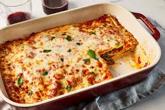

Homepage
Lasagna

Description
Lasagna is a comforting, baked dish made of layered pasta, savory sauce, cheese, and meat or vegetables. It's a hearty, flavorful meal loved by many.5
Ingredients:
Meat Sauce:
- 1 lb ground beef
- 1 lb Italian sausage
- 1 onion, diced
- 3 cloves garlic, minced
- 1 can (28 oz) crushed tomatoes
- 2 cans (6 oz each) tomato paste
- 1 can (15 oz) tomato sauce
- 2 tablespoons dried parsley
- 2 tablespoons dried basil
- 1 teaspoon salt
- 1/2 teaspoon ground black pepper
- 12 lasagna noodles
- 16 oz ricotta cheese
- 1 egg
- 3 cups shredded mozzarella cheese
- 1/2 cup grated Parmesan cheese
Cheese Sauce:
- 15 oz (425g) ricotta cheese
- 2 cups shredded mozzarella cheese, divided
- 1 cup grated Parmesan cheese
- 1 large egg
- 2 tablespoons fresh parsley, chopped (or 1 teaspoon dried parsley)
- 1/4 teaspoon salt
- 1/4 teaspoon black pepper
Steps:
- Preheat the oven
- Make the Meat Sauce
- Prepare the Cheese Filling
- Asemble the Lasagna
- Bake